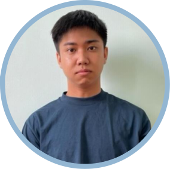

Koit Eng Kho
I am a Diploma holder in Software Engineering (AI & Robotics) from Malaysia, actively seeking opportunities in Network Engineering, Software Development, and Data Center roles. I have hands-on experience in AI drone hand gesture control using
DJI Tello EDU and possess strong skills in Python, JavaScript, Django, React.js, and HTML5. I am passionate about problem-solving and applying my knowledge in innovative and dynamic work environments.
Contact Information
Education
Diploma in Software Engineering (AI & Robotics)
Institution: New Era Institute of Vocational & Continuing Education, Kajang
Awarding Institution: West College Scotland UK (WCS)
Graduated: April 2024
Credit Achieved: 85 (Merit)
Skills
- Python Programming
- JavaScript
- React.js & Django
- Docker and VMware
- Unix/Linux System Administration
- Network Troubleshooting and Support
- Event Management & Team Supervision
- Microsoft Office Suite (Word, Excel, PowerPoint)
- Profesional use ChatGPT and perplexity.ai
- AI Drone Hand Gesture Control
Professional Experience
Supervisor
Grand Timber Enterprise, Tanah Merah, Kelantan
Responsibilities:
- Supervised a team of 20-30 workers in opening roads within forested areas for infrastructure projects.
- Coordinated logistics for supplies, food, and equipment maintenance.
- Used Microsoft Office and WhatsApp for project management and team communication.
CANON Promoter
Digital Mall, Selangor
Responsibilities:
- Part-time promoter for Canon products, assisting customers with product inquiries and purchases.
Actor
Star City Talents Agency, Wilayah Persekutuan
Responsibilities:
- Worked in various acting roles for media projects between June 2022 and May 2024.
Food Gathering Part-time
Seri Kembangan Tasty Taxi Enterprise
Responsibilities:
- Handled food collection and deliveries for customers from August 2023 to April 2024.
Certifications
Interests
- Exploring AI technologies and Robotics advancements
- Playing AAA video games such as Black Myth:WuKong series
- Programming, Tennis, Muay Thai, and Hiking